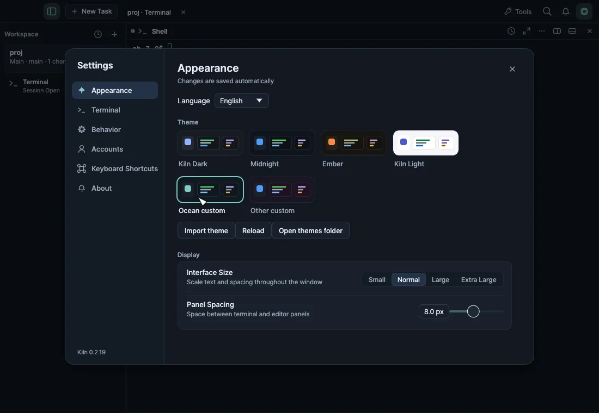
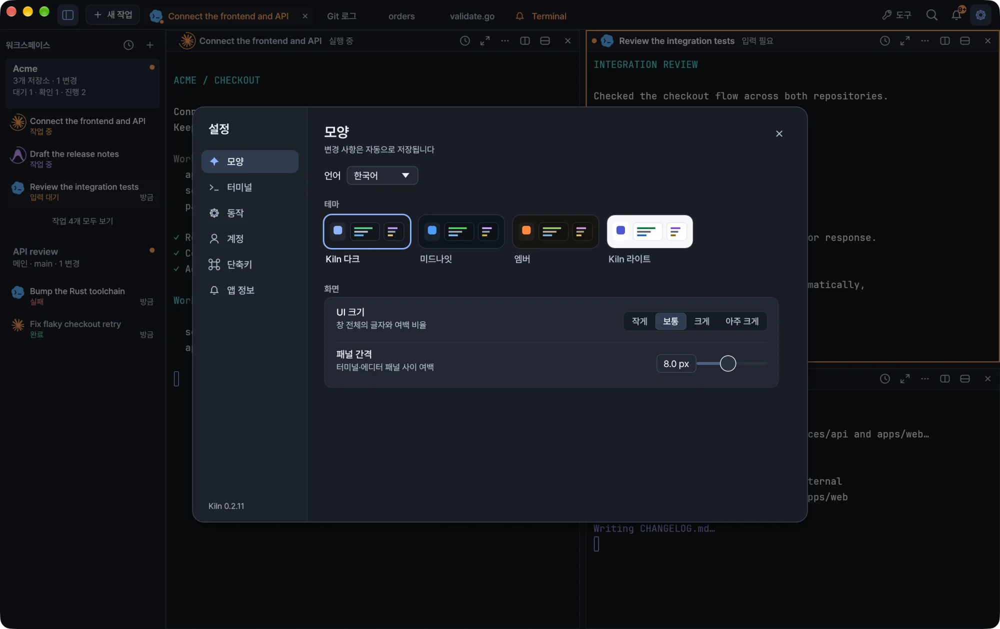

Install Kiln on macOS or Windows, open your first workspace, keep the app up to date and choose its language.
Install Kiln with one command or download it from GitHub Releases. Kiln then keeps itself up to date, and updates leave your running terminals alone.

Kiln running a demo workspace.
Requirements
Platform
Requirement
macOS
macOS 11 or later on an Apple Silicon Mac. Builds are notarized.
Windows
Windows 11 on x64 or ARM64. Builds are not code-signed yet.
Intel Mac and Linux builds are not currently provided. Windows 10 is not tested.
Install on macOS
Use the install script
Run this in Terminal:
curl -fsSL https://raw.githubusercontent.com/YangTaeyoung/kiln/main/install.sh | sh
The script downloads the latest stable Apple Silicon app and checks the release checksum, Developer ID signature, bundle identity and Apple notarization before installing it in /Applications. If Kiln is already installed, the script leaves it in place; use Kiln → Check for Updates to upgrade instead.
To install somewhere else, set KILN_INSTALL_DIR:
curl -fsSL https://raw.githubusercontent.com/YangTaeyoung/kiln/main/install.sh | KILN_INSTALL_DIR="$HOME/Applications" sh
The script picks the x64 or ARM64 archive for your machine, checks the release checksum and the archive's paths and version, and then:
installs Kiln into %LOCALAPPDATA%\Programs\Kiln,
adds a Kiln shortcut to the Start menu,
adds the bin folder to your user PATH, for the kiln command.
Set KILN_INSTALL_DIR to choose another folder. An existing installation is left in place.
Download the archive
You can also download the archive for your architecture from GitHub Releases.
Note Windows builds are not code-signed yet. The install script's download does not trigger SmartScreen, but an archive downloaded with a browser may. Choose More info → Run anyway only for archives from the Releases page.
First launch
Open Kiln from Applications or the Start menu.
Create a workspace with the + button in the workspace sidebar (⌘N on macOS). Give it a name and choose your project folder.
Use the terminal directly, or choose New Task, type a request, pick an agent and start.
The folder can be a single repository or a parent folder that contains several repositories. See Workspaces and tasks for how workspaces, tasks and splits fit together.
On Windows, starting Kiln again while it is running brings the existing window forward and opens the folder you gave it there.
Install the tools you use
Kiln runs the agent and GitHub command-line tools you already have. It does not bundle them or include a subscription. Install and sign in to the ones you use:
Tool
Used for
Claude Code (claude)
Claude tasks
Codex (codex)
Codex tasks
Antigravity (agy)
Antigravity tasks. Install it with Google's installer.
gh
GitHub features
Kiln looks for agy in your PATH, ~/.local/bin, /opt/homebrew/bin and /usr/local/bin. On Windows, Claude Code and Codex run as native Windows programs and keep their data in %USERPROFILE%\.codex and %USERPROFILE%\.claude.
You can sign in to Claude Code and Codex accounts from Settings → Accounts, and to Antigravity on macOS from Settings → Accounts → Antigravity. On Windows, sign in to Antigravity by running agy in a terminal. See Accounts. To check installed CLI versions or update them, open Settings → Accounts → CLI updates; see Conversations and updates.
Update Kiln
Updates keep your running terminal sessions intact.
macOS
Kiln checks for updates automatically and installs them through the Sparkle update dialog. To check yourself, choose Kiln → Check for Updates, or use the update control in Settings → About. You can turn off automatic checks in Settings.
Windows
Kiln checks for updates once a day. To check yourself, open Settings → About → Check for Updates, then choose Install and Restart. Kiln verifies that the downloaded archive matches the release signing key before it replaces any files. Running terminals keep running.
Tip On macOS 15 and later, if a command that reaches your local network fails in a panel that was open before the update, open a new terminal panel and retry it there. See Local network access on macOS.
Choose a language
Open Settings → Appearance → Language and choose English, Korean, Japanese or Simplified Chinese. The change applies immediately and is saved for the next launch.
Only Kiln's own interface changes. Terminal output, filenames, code, commit messages and agent requests keep their original contents. Installations from earlier versions stay in Korean until you choose a language.
Terminal to set up shell integration and activity reporting.
문서시작하기
설치와 업데이트
macOS나 Windows에 Kiln을 설치하고, 첫 워크스페이스를 열고, 앱을 최신 상태로 유지하고, 언어를 고릅니다.
Kiln은 명령 한 줄로 설치하거나 GitHub Releases에서 내려받을 수 있습니다. 설치한 뒤에는 Kiln이 알아서 업데이트하며, 업데이트해도 실행 중인 터미널은 그대로입니다.

데모 워크스페이스로 실행한 Kiln
요구 사항
플랫폼
요구 사항
macOS
Apple Silicon Mac, macOS 11 이상. 빌드는 공증(notarization)을 거칩니다.
Windows
x64 또는 ARM64 기반 Windows 11. 빌드는 아직 코드 서명이 되어 있지 않습니다.
Intel Mac과 Linux용 빌드는 현재 제공하지 않습니다. Windows 10에서는 테스트하지 않았습니다.
macOS에 설치하기
설치 스크립트로 설치
터미널에서 다음 명령을 실행합니다.
curl -fsSL https://raw.githubusercontent.com/YangTaeyoung/kiln/main/install.sh | sh
스크립트는 최신 안정 버전의 Apple Silicon 앱을 내려받은 뒤 릴리스 체크섬, Developer ID 서명, 번들 식별 정보, Apple 공증을 확인하고 /Applications에 설치합니다. Kiln이 이미 설치되어 있으면 기존 설치는 건드리지 않습니다. 이때 업그레이드하려면 Kiln → 업데이트 확인을 사용하세요.
다른 위치에 설치하려면 KILN_INSTALL_DIR을 지정합니다.
curl -fsSL https://raw.githubusercontent.com/YangTaeyoung/kiln/main/install.sh | KILN_INSTALL_DIR="$HOME/Applications" sh
참고 Windows 빌드는 아직 코드 서명이 되어 있지 않습니다. 설치 스크립트로 내려받으면 SmartScreen 경고가 뜨지 않지만, 브라우저로 내려받은 압축 파일에서는 뜰 수 있습니다. 추가 정보 → 실행(More info → Run anyway)은 Releases 페이지에서 받은 압축 파일일 때만 선택하세요.
처음 실행하기
응용 프로그램 폴더나 시작 메뉴에서 Kiln을 엽니다.
워크스페이스 사이드바의 + 버튼(macOS에서는 ⌘N)으로 워크스페이스를 만듭니다. 이름을 정하고 프로젝트 폴더를 선택합니다.
터미널을 바로 쓰거나, 새 작업을 선택해 요청을 입력하고 에이전트를 골라 시작합니다.
폴더는 저장소 하나여도 되고, 여러 저장소를 담은 상위 폴더여도 됩니다. 워크스페이스, 작업, 분할 화면이 어떻게 맞물리는지는 워크스페이스와 작업에서 설명합니다.
Windows에서는 Kiln이 실행 중일 때 다시 실행하면 기존 창이 앞으로 나오고, 넘겨준 폴더를 그 창에서 엽니다.
사용할 도구 설치하기
Kiln은 이미 설치된 에이전트 CLI와 GitHub CLI를 실행합니다. 이 도구들은 Kiln에 포함되어 있지 않고, 구독도 포함되어 있지 않습니다. 사용할 도구를 설치하고 로그인하세요.
도구
용도
Claude Code (claude)
Claude 작업
Codex (codex)
Codex 작업
Antigravity (agy)
Antigravity 작업. Google 설치 프로그램으로 설치합니다.
gh
GitHub 기능
Kiln은 PATH, ~/.local/bin, /opt/homebrew/bin, /usr/local/bin에서 agy를 찾습니다. Windows에서 Claude Code와 Codex는 네이티브 Windows 프로그램으로 실행되며, 데이터는 %USERPROFILE%\.codex와 %USERPROFILE%\.claude에 저장합니다.
Claude Code와 Codex 계정은 설정 → 계정에서, macOS의 Antigravity는 설정 → 계정 → Antigravity에서 로그인할 수 있습니다. Windows에서는 터미널에서 agy를 실행해 Antigravity에 로그인합니다. 자세한 내용은 계정을 참고하세요. 설치된 CLI 버전을 확인하거나 업데이트하려면 설정 → 계정 → CLI 업데이트를 여세요. 대화와 업데이트에서 자세히 설명합니다.
Kiln 업데이트
업데이트해도 실행 중인 터미널 세션은 그대로 유지됩니다.
macOS
Kiln은 업데이트를 자동으로 확인하고 Sparkle 업데이트 대화상자로 설치합니다. 직접 확인하려면 Kiln → 업데이트 확인을 선택하거나 설정 → 앱 정보의 업데이트 항목을 사용하세요. 자동 확인은 설정에서 끌 수 있습니다.
Windows
Kiln은 하루에 한 번 업데이트를 확인합니다. 직접 확인하려면 설정 → 앱 정보 → 업데이트 확인을 연 다음 설치하고 다시 시작을 선택합니다. Kiln은 파일을 교체하기 전에 내려받은 압축 파일이 릴리스 서명 키와 맞는지 검증합니다. 실행 중인 터미널은 계속 실행됩니다.
팁 macOS 15 이상에서, 업데이트 전부터 열려 있던 패널에서 로컬 네트워크에 접근하는 명령이 실패하면 새 터미널 패널을 열고 다시 실행하세요. macOS의 로컬 네트워크 접근을 참고하세요.
언어 선택하기
설정 → 모양 → 언어를 열고 영어, 한국어, 일본어, 중국어 간체 중 하나를 고릅니다. 변경 사항은 바로 적용되고, 다음에 실행할 때도 유지됩니다.
바뀌는 것은 Kiln 자체의 인터페이스뿐입니다. 터미널 출력, 파일 이름, 코드, 커밋 메시지, 에이전트 요청은 원래 내용 그대로입니다. 이전 버전에서 설치했다면 언어를 고르기 전까지 한국어로 표시됩니다.
 Kiln
Kiln